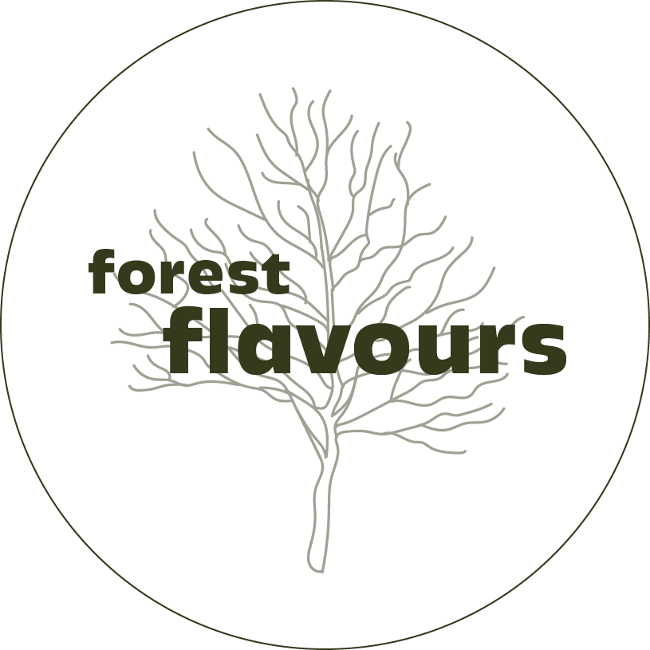

Foraging means searching for food in nature, like hunting, fishing, or picking wild plants and fruits. People and animals have been doing it for a long time. Nowadays, foraging can also include things like hunting for mushrooms or gathering herbs for cooking or medicine.
Join us in fostering a community that values the delicate balance between humans and nature. Together, let's embark on a journey of sustainable foraging that not only nourishes our bodies but also nurtures a greater sense of environmental stewardship.
Explore the forest flavours